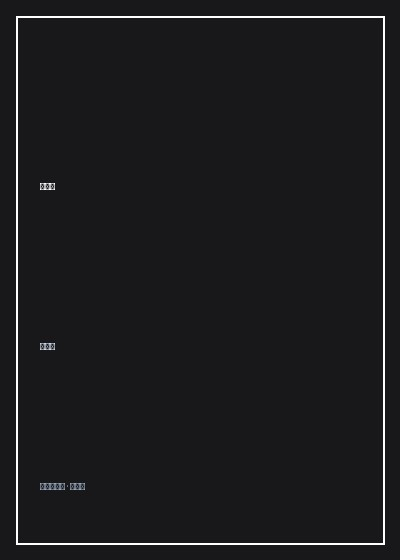

《悟空传》

总体观点
《悟空传》是二十一世纪初中国互联网文学破晓时代无可争议的最高图腾与精神峰峦。作家今何在以极其惊世骇俗的现代解构主义笔法，彻底打碎了吴承恩《西游记》中传统的取经正果与降妖伏魔神话，将整个西天取经之路重塑为一场天庭神权对自由灵魂进行系统性阉割、洗脑与抹杀的漫长阴谋与血泪祭祀。
小说的叙事在花果山被焚为焦土的五百年废墟、天庭冰冷森严的蟠桃园、以及大漠漫天黄沙的取经绝路上多线交错跳跃。唐僧不再是懦弱胆小的迂腐和尚，而是参透“神仙不仁，以万物为刍狗”誓要普度众生脱离天命囚牢的叛道哲人金蝉子；猪八戒不再是贪吃好色的滑稽丑角，而是一个五百年来默默仰望银河、为守护所爱阿月甘愿忍受野猪皮囊与熊熊天火的痴情种；沙僧则是一个为拼凑一块摔碎的琉璃盏、五百年如一日被飞剑穿心却依然换不回天庭半点施舍的卑微耗材奴隶。
全书最具震撼力与哲学深度的是“两个孙悟空”的自相残杀——天庭为了消灭这只敢于大闹天宫的妖王，剥夺其记忆并戴上金箍，派出一个被规训为打手的“假悟空”，去西行路上亲手诛杀那个保留着叛逆热血、誓死捍卫花果山自由火种的“真悟空”。当两个神魂在雷霆暴雨中同归于尽、金箍在烈火中化为飞灰时，小说迸发出世界文学长廊中最激昂磅礴的英雄战歌：“我要这天，再遮不住我眼；我要这地，再历不过我心；我要这众生，都明白我意；我要那诸佛，都烟消云散！”这是一部献给所有被生活磨平棱角、却在深夜依然为理想热泪盈眶的年轻人的永恒精神烈焰。
核心观点
-
1. 天命神权的虚伪本质：所谓修成正果不过是磨平野性的驯化陷阱
天庭诸神并非慈悲普度众生，而是为了维持绝对的长生霸权与香火垄断。西天取经不是功德圆满的晋升之路，而是一场逼迫神猴亲手灭杀自我的赎罪苦役。
如来佛祖微笑着合掌宣称“只要你放下金箍棒便可封斗战胜佛”，金蝉子当面厉声喝斥：“你创造了天命，又让众生为了顺从你而苦苦挣扎，这算什么慈悲！” -
2. 紫霞与晚霞的悲剧约定：神仙长生不老却唯独剥夺了爱的自由
在森严冰冷的神权天规中，动情是最大的死罪。为了守护漫天晚霞的一瞥、为了多看一眼心爱之人的脸庞，神仙们宁可放弃金身仙籍坠入万劫不复。
紫霞仙子坐在蟠桃园的枯枝上凝视夕阳，微笑着对孙悟空说：“我知道有一天他会在万众瞩目的情况下出现，身披金甲圣衣，脚踏七彩祥云来娶我。” -
3. 两个悟空的同体搏杀：体制规训打手对原始自由灵魂的自我处决
世间最残忍的悲剧是一个人为了获得体制的认可，亲手杀死了年轻时那个桀骜不驯、赤诚热血的自己。金箍不仅锁住了头颅，更锁死了反抗的意志。
头戴紧箍的孙悟空将金箍棒狠狠砸碎了那个满身泥泞、狂笑着嘶吼“我是齐天大圣”的妖猴头颅，但在对方倒下的那一秒，他自己的心脏也随之彻底粉碎停跳。 -
4. 琉璃盏与沙僧的虚妄效忠：卑微工具人在特权阶层面前的毫无价值
底层小人物以为只要任劳任怨、忠心耿耿就能换来体制的重新接纳，然而在上位者眼中，你为了拼凑一片碎片受尽的五百年酷刑，不过是一场毫无意义的杂耍。
沙僧跪在王母娘娘脚下，颤抖着捧出自己用五百年血泪勉强拼凑完整的琉璃盏，王母只是冷漠地一挥衣袖将其拂落在地砸得粉碎：“一件垃圾，拼它做甚。” -
5. 败者的壮烈英雄主义：知其必死而死不低头的生命傲骨
英雄的伟大不在于战胜神佛建立霸业，而在于明知前路是万丈深渊与彻底毁灭，依然敢于挥舞战旗冲向雷霆苍穹。只要反抗的火种曾照亮夜空，生命便永不磨灭。
哪怕身躯被天雷劈成焦炭、花果山被焚为白地，孙悟空依然昂首大笑：“生我何用？不能欢笑。灭我何用？不减狂骄！这个天地，我来过，我爱过，我战斗过，我不后悔！”
全书结构
-
第一至五章 焦土大漠、失忆猴子与白龙马的眼泪
五百年后茫茫大漠戈壁，失忆的孙悟空与猪八戒在客栈相遇，紫霞与阿紫仙子现身，小白龙在水洼边凝视唐僧，拉开反叛序幕。
小白龙化作人形倚在枯井边，流着泪质问唐僧：“你明明什么都知道，为什么还要带他们去西天送死？”唐僧抬头望天无言以对。 -
第六至十章 天庭晚霞、银河大火与金蝉子的离经叛道
插叙五百年前天宫往事：孙悟空与紫霞在蟠桃园的初见、天蓬元帅守护阿月被贬凡尘、金蝉子在雷音寺金殿与如来佛祖关于佛法本质的世纪决裂。
金蝉子一把扯下身上的袈裟扔在佛祖脚下，朗声大笑：“若天压我，劈开那天；若地拘我，踏碎那地！我金蝉子今日退下佛位，再不做木偶泥塑！” -
第十一至十五章 两个悟空的死斗与花果山的大清洗
天庭大军血洗花果山寸草不生，戴金箍的悟空奉命围剿残余妖族，直面那个未戴金箍、誓死守护最后一只松鼠的齐天大圣，爆发震天撼地的自我搏杀。
暴雨倾盆的花果山焦岩上，两个一模一样的孙悟空挥动金箍棒在空中狂暴对撞，血肉横飞，天地间唯余两声撕心裂肺的暴虐咆哮。 -
第十六至二十章 金箍碎裂、烈火涅槃与不朽的英雄长歌
全书激昂高潮，紫霞阿紫相继殉情，孙悟空彻底觉醒粉碎金箍，率领天地群妖向九重天庭发起终极决死冲锋，留下千古传诵的英雄四句金言。
烈火焚尽三十三重天宫，巨石轰然炸裂，孙悟空的金甲在朝霞中烈烈作响，狂傲的长啸穿透万古星河，全书在悲壮灿烂的永恒定格中落下大幕。